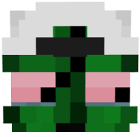
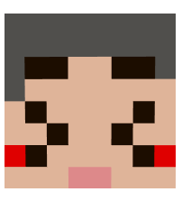
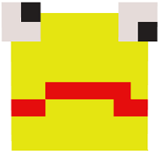
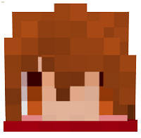

限界とは？
- 読み方は普通に「げんかい」(GENKAI)。
- 主にTwitchでゲーム配信を行う配信者6人の集団。
グループやチームというわけではない。通称のようなもの。
彼らはゲーム仲間であり、親しい友人でもあり、敵同士でもある。 - 敵同士とは言いつつも全く不仲ではない。
気兼ねなく罵倒しあい、遠慮なく殺しあえる仲である。 - メンバーは、ぐちつぼ・げんぴょん・たらこ・んそめ・ごんかね・焼きパン。
- 初期は前者3名(ぐちつぼ・げんぴょん・たらこ)が限界、後者3名(んそめ・ごんかね・焼きパン)が補欠と呼ばれていた。
配信や動画タイトルで「限界+補欠」と表記されているなど、後者3名は文字通り補欠としてときどき登場するメンバーだった。
しかし今では6人全員が限界と呼ばれている。
| プロフィール | ||||||
| 名前 | ぐちつぼ | げんぴょん | たらこ | んそめ | ごんかね | 焼きパン |
| 画像 |  |  |  |
 |  | |
| カラー | #255c25 | #D98496 | #FF4141 | #F5DE84 | #FFF678 | #FF7F50 |
| 誕生日 | 1996/9/3 | 1995/5/6 | 2000/6/16 | 1998/1/23 | 1997/3/7 | 2000/8/1 |
| 年齢 | 28 | 30 | 24 | 27 | 28 | 24 |